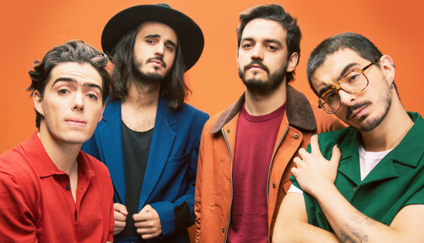

Morat
Morat es una banda de música formada en Bogotá en 2011.

INTEGRANTES
- Juan Pablo Isaza Piñeros
- Juan Pablo Villamil Cortés
- Simón Vargas Morales
- Martín Vargas Morales
| DISCOS |
FECHA |
CERTIFICACIONES |
| Sobre el amor y sus efectos secundarios |
17 de junio de 2016 |
- En España: Oro
- En EEUU: Oro(latino)
- En México: 2xPlatino + Oro
|
| Balas Pérdidas |
26 de octubre de 2018 |
- En España: Oro
- En EEUU: Oro(latino)
- En México: 2xPlatino + Oro
|
| ¿A dónde vamos? |
15 de julio de 2021 |
No tiene todavía. |
ENLACES EXTERNOS DEL GRUPO
- Para escucharlos en spotify
- Para seguirlos en Twitter
- Para comprar sus entradas de su gira mundial actual
>